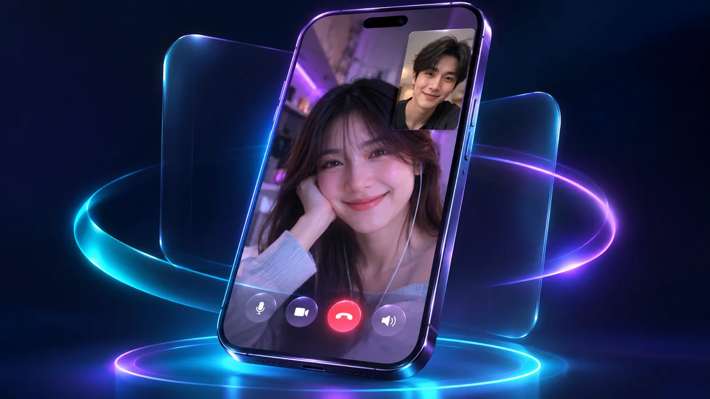
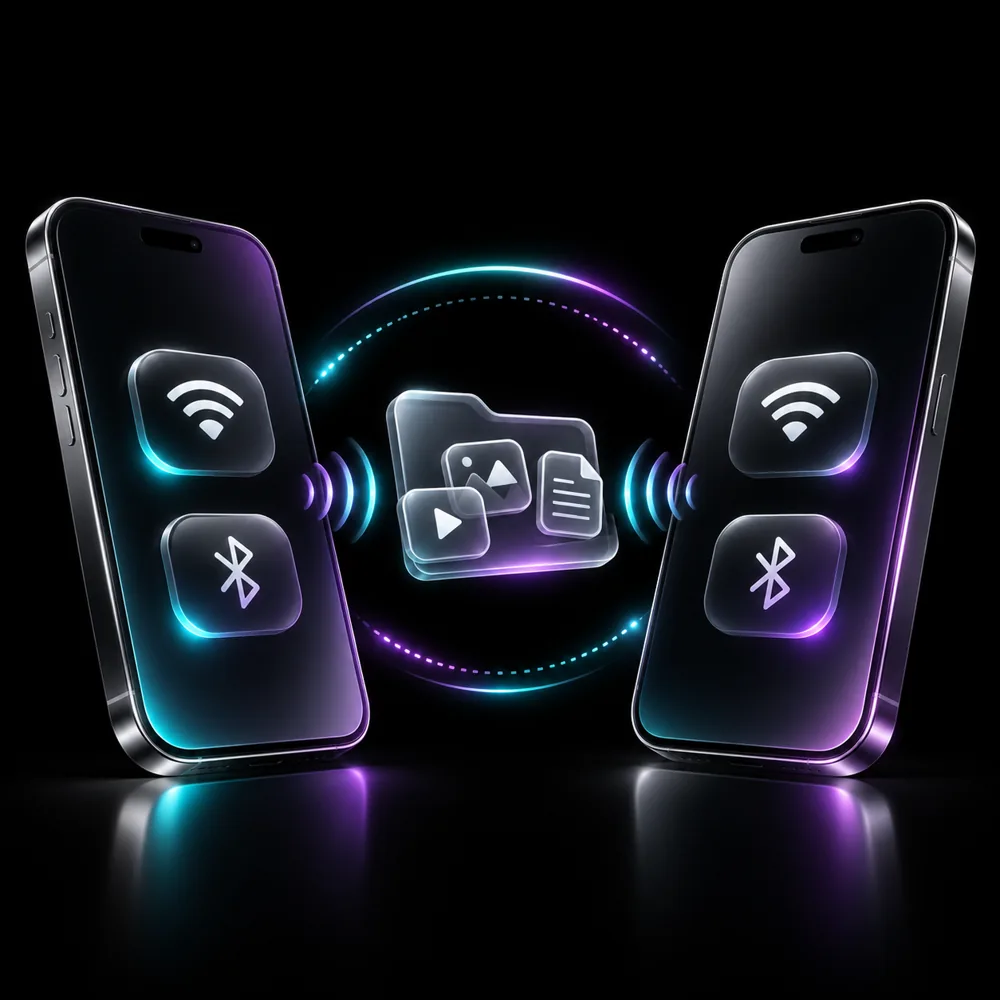
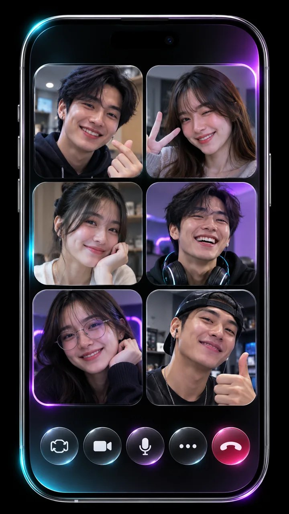
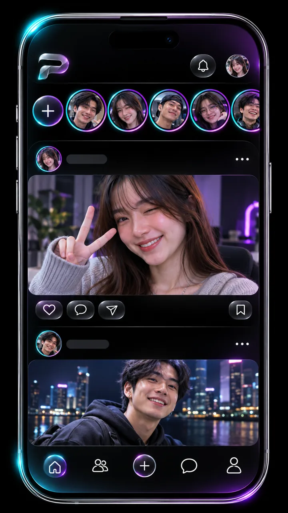

PURE รวมแชต โทรเสียง วิดีโอคอล สัตว์เลี้ยง 2D และผู้ช่วย AI ไว้ในแอปเดียว ส่งข้อความหากันแบบออฟไลน์ผ่าน Wi-Fi หรือ Bluetooth ก็ได้
ไฟล์ PURE-0.8.0.apk · รุ่นทดสอบ (debug) · ติดตั้งเองได้โดยไม่ต้องผ่าน Google Play
แชตส่วนตัวและกลุ่ม ส่งไฟล์ สติกเกอร์ และแปลข้อความอัตโนมัติ 8 ภาษา
โทรหาเพื่อนผ่าน WebRTC ทั้งเสียงและวิดีโอ
เพื่อนตัวน้อย 16 สายพันธุ์ ทักทายด้วยเสียงและท่าทาง
ผู้ช่วย AI และคุยด้วยเสียงแบบสด เลือกเปิดใช้เองได้
ปรับแสง สี คอนทราสต์ และหมุนรูปบนเครื่องก่อนส่ง
โพสต์รูป วิดีโอ Reels กดถูกใจ และคอมเมนต์
สแกน QR โค้ดเพื่อเพิ่มเพื่อนได้ทันที
ส่งข้อความเข้ารหัสผ่าน Wi-Fi/ฮอตสปอต หรือ Bluetooth กับเครื่องที่มี PURE
ติดตั้งเซิร์ฟเวอร์ของคุณเองด้วย Docker หรือ Cloudflare Tunnel
ข้อความ ไฟล์ สติกเกอร์ เสียง และวิดีโอ ข้อความที่ส่งไม่ออกตอนเน็ตหลุดจะรอส่งให้เองเมื่อเน็ตกลับมา
เลือกสัตว์เลี้ยงจาก 16 สายพันธุ์ มีเสียงและท่าทางทักทาย
Gemini ช่วยตอบ แปล และปรับรูป ภาพจะส่งให้ Google เฉพาะเมื่อคุณกดใช้เท่านั้น

ส่งข้อความเข้ารหัสหาคนใกล้ๆ ผ่าน Wi-Fi หรือ Bluetooth
ฟีเจอร์ที่กำลังพัฒนา ยังไม่มีในรุ่น 0.8.0

คุยพร้อมกันหลายคนในสายเดียว

แชร์รูปและวิดีโอที่หายไปเองใน 24 ชั่วโมง
กดปุ่มดาวน์โหลดบนมือถือ Android 8 ขึ้นไป
ตั้งค่า › แอป › เบราว์เซอร์ที่ใช้ › ติดตั้งแอปที่ไม่รู้จัก › อนุญาต
เปิดไฟล์ กดติดตั้ง แล้วใส่ที่อยู่เซิร์ฟเวอร์ PURE เพื่อเริ่มใช้งาน
ดาวน์โหลดและติดตั้งได้ฟรี ฟีเจอร์ AI ต้องตั้งค่า Gemini ที่เซิร์ฟเวอร์
ตอนนี้เป็นรุ่นทดสอบ แจกเป็นไฟล์ APK โดยตรง
ข้อความออฟไลน์เข้ารหัส และภาพจะไม่ถูกส่งให้ AI เว้นแต่คุณกดใช้เอง นี่เป็นรุ่น debug จึงแนะนำให้ใช้เพื่อทดลองก่อน
แอปเชื่อมต่อเซิร์ฟเวอร์ PURE สำหรับแชตและโทร คุณรันเซิร์ฟเวอร์เองได้ ส่วนข้อความใกล้ตัวผ่าน Wi-Fi/Bluetooth ใช้ได้โดยไม่ต้องมีอินเทอร์เน็ต
ตอนนี้มีเฉพาะ Android 8 ขึ้นไป